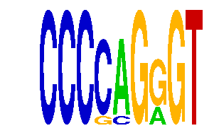

family_20 |
|---|
|  |
| Download PWM |
| Download instances (motifs) |
| Show motif distribution |
Query_ID | Query_Consensus | Subject_Name | Source_DB | Subject_ID | Length | Orientation | Offset | Divergence | Overlap | Subject_Consensus |
|---|---|---|---|---|---|---|---|---|---|---|
| family_20 | CCCCAGGGT | KLF6 | HOCOMOCO | KLF6_HUMAN.H10MO.D | 8 | reverse-complement | -4 | 0.777 | 4 | GGGGGCGG |
Sequence | Start_position (from start) | Start_position (from end) | Average conservation | Best conservation score | Instance_with_best_CS | Best_Z-score | Instance_with_best_ZS | Strand |
|---|---|---|---|---|---|---|---|---|
| chr8:86099626-86100626 | 134 | 143 | 0.0177778 | 0.041 | CCCSAGRGT | 12.8627615 | CCCCMGRGT | -1 |
| chr4:140977485-140978485 | 960 | 969 | 0.986333 | 1 | CCCSMGGGT | 12.747894 | CCCSAGRGT | -1 |
| chr4:137476602-137477602 | 238 | 247 | 0.688 | 0.729 | CCCCMGRGT | 12.747894 | CCCSAGRGT | 1 |
| chr7:4460996-4461996 | 819 | 828 | 0.000333333 | 0.001 | CCCCMGRGT | 12.747894 | CCCSAGRGT | 1 |
| chr9:110666441-110667441 | 569 | 578 | 0.770222 | 1 | CCCCMGRGT | 12.747894 | CCCSAGRGT | 1 |
| chr19:10299281-10300281 | 876 | 885 | 0.00777778 | 0.036 | CCCSAGRGT | 12.8627615 | CCCCMGRGT | 1 |
| chr4:137032204-137033204 | 214 | 223 | 1 | 1 | CCCSMGGGT | 12.747894 | CCCSAGRGT | 1 |
| chr9:21903842-21904842 | 701 | 710 | 0.321889 | 0.874 | CCCSAGRGT | 12.8627615 | CCCCMGRGT | 1 |
| chr8:87888211-87889211 | 815 | 824 | 0.00533333 | 0.021 | CCCSAGRGT | 12.8627615 | CCCCMGRGT | -1 |
| chr7:19996118-19997118 | 320 | 329 | 0.241889 | 0.445 | CCCCMGRGT | 12.710033 | CCCSMGGGT | 1 |
| chr7:134170729-134171729 | 455 | 464 | 0.0164444 | 0.051 | CCCSAGRGT | 12.710033 | CCCSMGGGT | 1 |
| chr19:44320474-44321474 | 190 | 199 | NA | NA | CCCSMGGGT | 12.747894 | CCCSAGRGT | 1 |
| chr7:51729362-51730362 | 738 | 747 | 0.004 | 0.015 | CCCSAGRGT | 12.710033 | CCCSMGGGT | 1 |
| chr13:13530453-13531453 | 159 | 168 | 0.00244444 | 0.004 | CCCCMGRGT | 12.747894 | CCCSAGRGT | 1 |
| chr13:30437006-30438006 | 704 | 713 | 0.000555556 | 0.002 | CCCSAGRGT | 12.710033 | CCCSMGGGT | 1 |
| chr8:97884629-97885629 | 606 | 615 | 0.00511111 | 0.021 | CCCSMGGGT | 12.8627615 | CCCCMGRGT | 1 |